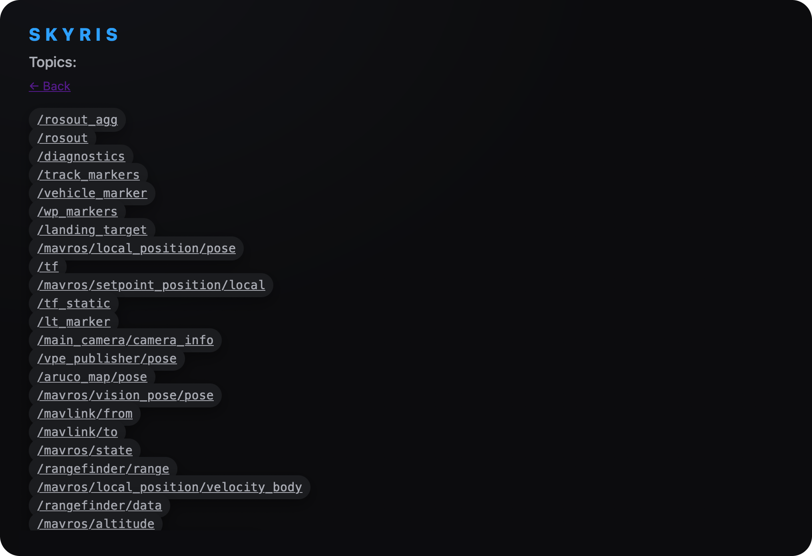
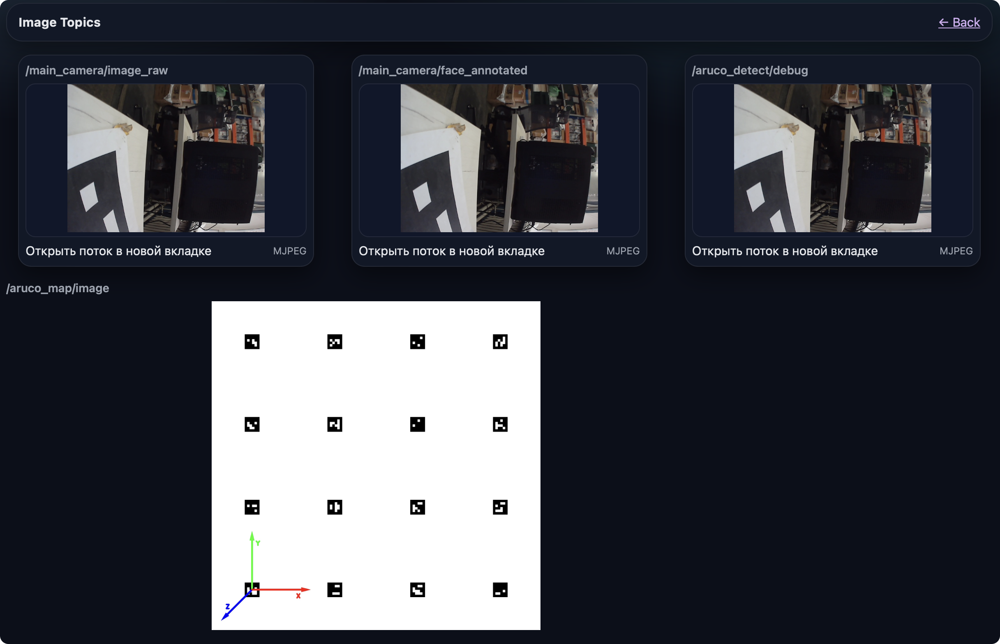

The Robot Operating System (ROS) — это набор программных библиотек и инструментов, помогающих создавать приложения для роботов.
Подсказка для того чтобы увидеть список всех ros пакетов доступных в этом приложении перейдите в браузере по пути http://10.42.0.1:8000
Пункт View Topics позволяет увидеть список всех доступных топиков

Пункт View Image Topics (web_video_server) позволяет увидеть просмотр изображений с камер, детекцию аруко меток, а также детекцию объектов используя нейронные сети.
